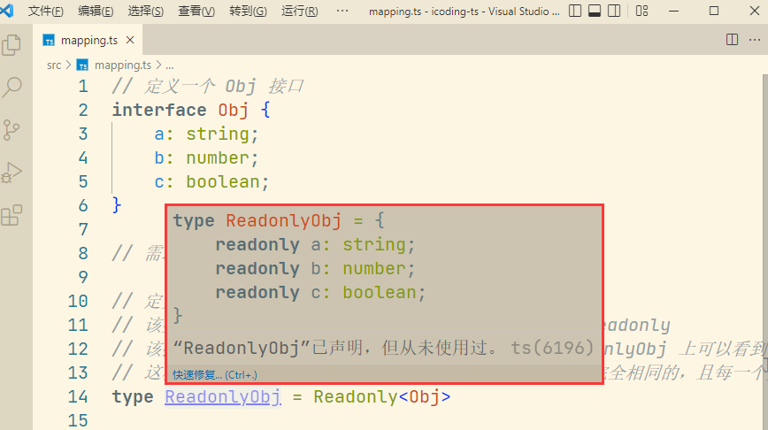

泛型
很多时候，我们希望一个函数 或 一个类可以支持多种数据类型 且 有很大的灵活性，就需要用到泛型。
泛型的概念
举例：声明一个打印函数
// 定义一个打印函数
function log(value: string): string {
console.log(value);
return value;
}
- 以上是一个打印函数，它接收一个字符串，将该字符串打印出来，最终直接返回该字符串。
接下来，我们希望该函数接收一个字符串数组，应如何实现 ？
- 通过前面的学习，我们可能会想到使用 函数重载 的方式来实现
// 函数重载
// 定义接收字符串变量的函数
function log(value: string): string;
// 定义接收字符串数组的函数
function log(value: string[]): string[];
// 最后，在一个比较宽泛的版本中将其实现，参数类型为 any
function log(value: any) {
console.log(value);
return value;
}
- 还可以使用其它类型，联合类型 来实现。它会比函数重载更简便一些
// 联合类型
function log(value: string | string[]): string | string[] {
console.log(value);
return value;
}
- 现在需要更进一步，希望这个函数可以接收任何类型的参数，我们从前面的函数重载中已经得到了答案，即 使用 any 类型。
// any 类型
function log(value: any) {
console.log(value);
return value;
}
- 此时，使用 any 类型的函数似乎已经满足了我们所有的需求。
- 但产生了另外一个问题，any 类型丢失了一些信息，即 类型之间的约束关系，它忽略了输入参数的类型 和 函数返回值的类型必须是一致的。
- 当一个调用者看到这个 log 函数时，他完全无法获知这种约束关系，这时就需要用到泛型了。
为什么使用泛型
有些时候，函数返回值的类型与参数类型是相关的。
function foo(arr) {
return arr[0];
}
- 函数 foo() 总是返回参数数组的第一个成员
- 参数数组是什么类型，返回值就是什么类型
以上这个函数的类型声明只能写成下面这样
function f(arr: any[]): any {
return arr[0];
}
- 以上的类型声明，就反映不出参数与返回值之间的类型关系
为了解决这个问题，TypeScript 就引入了“泛型”（generics）。泛型的特点就是带有“类型参数”（type parameter）。
function foo<T>(arr: T[]): T {
return arr[0];
}
- 函数
foo()的函数名后面尖括号的部分<T>，就是类型参数，参数要放在一对尖括号（<>）里面 - 本例只有一个类型参数
T，可以将其理解为类型声明需要的变量，需要在调用时传入具体的参数类型
以上的函数
foo()的参数类型是T[]，返回值类型是T，就清楚地表示了两者之间的关系。
- 比如，输入的参数类型是
number[]，那么 T 的值就是number，因此返回值类型也是number- 函数调用时，需要提供类型参数。
foo<number>([1, 2, 3]);
- 调用函数
foo()时，需要在函数名后面使用尖括号，给出类型参数T的值，本例是<number>
不过为了方便，函数调用时，往往省略不写类型参数的值，让 TypeScript 自己推断。
foo([1, 2, 3]);
- TypeScript 会从实际参数 [1, 2, 3]，推断出类型参数 T 的值为 number
- 泛型的复杂场景
有些复杂的使用场景，TypeScript 可能推断不出类型参数的值，这时就必须显式给出了。
function foo<T>(arr1: T[], arr2: T[]): T[] {
return arr1.concat(arr2);
}
- 以上代码中，两个参数arr1、arr2和返回值都是同一个类型
- 如果不给出类型参数的值，下面的调用会报错。
function foo<T>(arr1: T[], arr2: T[]): T[] {
return arr1.concat(arr2);
}
foo([1, 2], ["a", "b"]); // 报错
以上代码中会报错，TypeScript 认为两个参数不是同一个类型。但是，如果类型参数是一个联合类型，就不会报错。
function foo<T>(arr1: T[], arr2: T[]): T[] {
return arr1.concat(arr2);
}
foo<number | string>([1, 2], ["a", "b"]); // 正确
- 类型参数是一个联合类型，使得两个参数都符合类型参数，就不报错了
- 这种情况下，类型参数是不能省略不写的
注：
- 类型参数的名字，可以随便取，但是必须为合法的标识符。习惯上，类型参数的第一个字符往往采用大写字母。一般会使用T（type 的第一个字母）作为类型参数的名字。
- 如果有多个类型参数，则使用 T 后面的 U、V 等字母命名，各个参数之间使用逗号（“,”）分隔。
- 多个类型参数应用
function foo<T, U>(arr: T[], f: (arg: T) => U): U[] {
return arr.map(f);
}
// 用法实例
foo<string, number>(["1", "2", "3"], (n) => parseInt(n)); // 返回 [1, 2, 3]
- 将数组的实例方法 foo() 改写成全局函数，它有两个类型参数 T 和 U
- 含义是，原始数组的类型为 T[]，对该数组的每个成员执行一个处理函数 f，将类型 T 转成类型 U，那么就会得到一个类型为 U[] 的数组
总之，泛型可以理解成一段类型逻辑，需要类型参数来表达。有了类型参数以后，可以在输入类型与输出类型之间，建立一一对应关系。
泛型的写法
泛型主要用在四个场合：函数、接口、类和别名。
- 函数的泛型写法
前面有提到，
function关键字定义的泛型函数，类型参数放在尖括号中，写在函数名后面。
function foo<T>(arg: T): T {
return arg;
}
对于变量形式定义的函数，泛型有下面两种写法
// 写法一
let bar1: <T>(arg: T) => T = foo;
// 写法二
let bar2: { <T>(arg: T): T } = foo;
- 接口的泛型写法
interface 也可以采用泛型的写法
interface Box<Type> {
contents: Type;
}
let box: Box<string>;
- 使用泛型接口时，需要给出类型参数的值（本例是string）
泛型接口方式一：先定义了一个泛型接口，然后将这个接口用于一个类
interface Count<T> {
countTo(value: T): number;
}
class Nums implements Count<Nums> {
countTo(value: Nums): number {
// ...
return 123;
}
}
泛型接口还有第二种写法
interface Fn {
<Type>(arg: Type): Type;
}
function foo<Type>(arg: Type): Type {
return arg;
}
let myFoo: Fn = foo;
- Fn 的类型参数 Type 的具体类型，需要函数 foo 在使用时提供
- 所以，最后一行的赋值语句不需要给出 Type 的具体类型
注：
- 此外，第二种写法还有一个差异之处。那就是它的类型参数定义在某个方法之中，其他属性和方法不能使用该类型参数。
- 前面的第一种写法，类型参数定义在整个接口，接口内部的所有属性和方法都可以使用该类型参数。
- 类的泛型写法
泛型类的类型参数写在类名后面
class User<K, V> {
key: K;
value: V;
}
继承泛型类
class User<T> {
value: T;
}
class Allen extends User<any> {}
- 类 User 有一个类型参数 T，使用时必须给出 T 的类型，所以类 Allen 继承时要写成
User<any>
泛型也可以用在类表达式
const Container = class<T> {
constructor(private readonly data: T) {}
};
const a = new Container<boolean>(true);
const b = new Container<number>(0);
- 新建实例时，需要同时给出类型参数 T 和 类参数 data 的值
实践应用
class Count<NumType> {
value!: NumType;
add!: (x: NumType, y: NumType) => NumType;
}
let foo = new Count<number>();
foo.value = 0;
foo.add = function (x, y) {
return x + y;
};
- 先新建类 Count 的实例 foo，然后再定义实例的 value 属性和 add() 方法
- 类的定义中，属性和方法后面的感叹号是非空断言，告诉 TypeScript 它们都是非空的，后面会赋值。
JavaScript 的类本质上是一个构造函数，因此也可以把泛型类写成构造函数。
type MyClass<T> = new (...args: any[]) => T;
// 或者
interface MyClass<T> {
new (...args: any[]): T;
}
// 用法实例
function createInstance<T>(AnyClass: MyClass<T>, ...args: any[]): T {
return new AnyClass(...args);
}
- 函数
createInstance()的第一个参数AnyClass是构造函数（也可以是一个类），它的类型是MyClass<T>，这里的 T 是createInstance()的类型参数，在该函数调用时再指定具体类型。
注：
- 泛型类描述的是类的实例，不包括静态属性和静态方法，因为这两者定义在类的本身。
- 因此，它们不能引用类型参数。
class Count<T> {
static data: T; // 报错
constructor(public value: T) {}
}
- 静态属性 data 引用了类型参数 T，这是不可以的
- 因为类型参数只能用于实例属性和实例方法，所以报错了
类型别名的泛型写法
type 命令定义的类型别名，也可以使用泛型。
type Nullable<T> = T | undefined | null;
Nullable<T>是一个泛型，只要传入一个类型，就可以得到这个类型与 undefined 和 null 的一个联合类型
应用案例
type Container<T> = { value: T };
const a: Container<number> = { value: 0 };
const b: Container<string> = { value: "b" };
- 定义树形结构
type Tree<T> = {
value: T;
left: Tree<T> | null;
right: Tree<T> | null;
};
- 类型别名 Tree 内部递归引用了 Tree 自身
类型参数的默认值
类型参数可以设置默认值。使用时，如果没有给出类型参数的值，就会使用默认值。
function getFirst<T = string>(arr: T[]): T {
return arr[0];
}
T = string表示类型参数的默认值是 string- 调用
getFirst()时，如果不给出T的值，TypeScript 就认为 T 等于 string
但是，因为 TypeScript 会从实际参数推断出T的值，从而覆盖掉默认值，所以下面的代码不会报错。
getFirst([1, 2, 3]); // 正确
// 实际参数是 [1, 2, 3]，TypeScript 推断 T 等于 number，从而覆盖掉默认值 string
类型参数的默认值，往往用在类中。
class Count<T = string> {
list: T[] = [];
add(t: T) {
this.list.push(t);
}
}
- 以上代码中，类Count有一个类型参数T，默认值为string。这意味着，属性list默认是一个字符串数组，方法add()的默认参数是一个字符串。
class Count<T = string> {
list: T[] = [];
add(t: T) {
this.list.push(t);
}
}
// 新建实例 c
const c = new Count();
c.add(4); // 报错
c.add("hello"); // 正确
- 以上代码中，新建 Count 的实例 c 时，没有给出类型参数 T 的值，所以 T 就等于 string。因此，向 add()方法传入一个数值会报错，传入字符串就不会。
class Count<T = string> {
list: T[] = [];
add(t: T) {
this.list.push(t);
}
}
const c = new Count<number>();
c.add(5); // 正确
c.add("icoding"); // 报错
// 新建实例 c 时，给出了类型参数 T 的值是 number
// 因此 add() 方法传入数值不会报错，传入字符串会报错
一旦类型参数有默认值，就表示它是可选参数。如果有多个类型参数，可选参数必须在必选参数之后。
<T = boolean, U> // 错误
<T, U = boolean> // 正确
- 依次有两个类型参数 T 和 U
- 如果 T 是可选参数，U 不是，就会报错
数组的泛型表示
在学习数组的章节中，数组类型有一种表示方法是
Array<T>
- 这就是泛型的写法，Array是 TypeScript 原生的一个类型接口，T是它的类型参数。声明数组时，需要提供T的值。
let arr: Array<number> = [1, 2, 3];
// Array<number> 就是一个泛型，类型参数的值是 number，表示该数组的全部成员都是数值
- 同样的，如果数组成员都是字符串，那么类型就写成
Array<string>
事实上，在 TypeScript 内部，数组类型的另一种写法
number[]、string[]，只是Array<number>、Array<string>的简写形式。
在 TypeScript 内部，Array是一个泛型接口，类型定义基本是下面的样子。
interface Array<Type> {
length: number;
pop(): Type | undefined;
push(...items: Type[]): number;
// ...
}
push()方法的参数item的类型是Type[]，跟Array()的参数类型Type保持一致，表示只能添加同类型的成员- 调用
push()的时候，TypeScript 就会检查两者是否一致
其他的 TypeScript 内部数据结构，比如Map、Set和Promise，其实也是泛型接口，完整的写法是
Map<K, V>、Set<T>和Promise<T>。
TypeScript 默认还提供一个ReadonlyArray<T>接口，表示只读数组。
function foo(values: ReadonlyArray<string>) {
values.push("icoding"); // 报错
}
- 参数 values 的类型是
ReadonlyArray<string>，表示不能修改这个数组，所以函数体内部新增数组成员就会报错 - 因此，如果不希望函数内部改动参数数组，就可以将该参数数组声明为
ReadonlyArray<T>类型
类型参数的约束条件
很多类型参数并不是无限制的，对于传入的类型存在约束条件
function foo<Type>(a: Type, b: Type) {
if (a.length >= b.length) {
return a;
}
return b;
}
- 类型参数 Type 有一个隐藏的约束条件：它必须存在
length属性 - 如果不满足这个条件，就会报错
TypeScript 提供了一种语法，允许在类型参数上面写明约束条件，如果不满足条件，编译时就会报错。这样也可以有良好的语义，对类型参数进行说明。
function foo<T extends { length: number }>(a: T, b: T) {
if (a.length >= b.length) {
return a;
}
return b;
}
T extends { length: number }就是约束条件，表示类型参数 T 必须满足{ length: number }，否则就会报错
foo([1, 2], [1, 2, 3]); // 正确
foo("ibc", "icoding"); // 正确
foo(1, 2); // 报错
// 只要传入的参数类型不满足约束条件，就会报错
类型参数的约束条件采用下面的形式。
<TypeParameter extends ConstraintType>
// TypeParameter 表示类型参数
// extends 是关键字，这是必须的
// ConstraintType 表示类型参数要满足的条件，即类型参数应该是 ConstraintType 的子类型
类型参数可以同时设置约束条件和默认值，前提是默认值必须满足约束条件。
type Fn<A extends string, B extends string = "world"> = [A, B];
type Result = Fn<"hello">; // ["hello", "world"]
- 类型参数 A 和 B 都有约束条件，并且 B 还有默认值
- 所以，调用 Fn 的时候，可以只给出 A 的值，不给出 B 的值
另外，上例也可以看出，泛型本质上是一个类型函数，通过输入参数，获得结果，两者是一一对应关系。
如果有多个类型参数，一个类型参数的约束条件，可以引用其他参数。
<T, U extends T>
// 或者
<T extends U, U>
- U 的约束条件引用 T，或者 T 的约束条件引用 U，都是正确的
但是，约束条件不能引用类型参数自身。
<T extends T> // 报错
<T extends U, U extends T> // 报错
- T 的约束条件不能是 T 自身
- 同理，多个类型参数也不能互相约束（即 T 的约束条件是 U、U 的约束条件是 T）
- 因为互相约束就意味着约束条件就是类型参数自身
泛型使用注意事项
在实际开发中，泛型的使用过程中的注意事项，中共有 4 项。
- 尽量少用泛型
泛型虽然灵活，但是会加大代码的复杂性，使其变得难读难写。
- 一般来说，只要使用了泛型，类型声明通常都不太易读，容易写得很复杂。因此，可以不用泛型就不要用。
- 类型参数越少越好
多一个类型参数，多一道替换步骤，加大复杂性。因此，类型参数越少越好。
function filter<T, Fn extends (arg: T) => boolean>(arr: T[], func: Fn): T[] {
return arr.filter(func);
}
- 以上代码中，有两个类型参数，但是第二个类型参数 Fn 是不必要的，完全可以直接写在函数参数的类型声明里面。
function filter<T>(arr: T[], func: (arg: T) => boolean): T[] {
return arr.filter(func);
}
// 类型参数简化成了一个，效果与前一个示例是一样的
- 类型参数需要出现两次
如果类型参数在定义后只出现一次，那么很可能是不必要的。
function foo<Str extends string>(s: Str) {
console.log("Hello, " + s);
}
以上代码中，类型参数Str只在函数声明中出现一次（除了它的定义部分），这往往表明这个类型参数是不必要。
function foo(s: string) {
console.log("Hello, " + s);
}
- 把前面的类型参数省略了，效果与前一个示例是一样的
- 也就是说，只有当类型参数用到两次或两次以上，才是泛型的适用场合。
- 泛型可以嵌套
类型参数可以是另一个泛型
type OrNull<Type> = Type | null;
type OneOrMany<Type> = Type | Type[];
type OneOrManyOrNull<Type> = OrNull<OneOrMany<Type>>;
- 最后一行的泛型
OrNull的类型参数，就是另一个泛型OneOrMany
总结
泛型对前端开发来说，是一个比较新的概念，刚开始接触会有些难以理解。
- 我们可以换个角度思考就会变得简单：将泛型变量与函数参数等同对待，它只不过是另一个维度的参数，是代表类型而不是代表值的参数。
- 泛型在后边的高级类型中有广泛的应用，现阶段先作为基础了解即可。
泛型的好处
- 函数和类可以轻松地支持多种类型，增强程序的扩展性
- 不必写多条函数重载，也不必写冗长的联合类型声明，增强代码可读性
- 灵活控制类型之间的约束
- 有了泛型，类型就像穿上了变色龙的外衣，可以很友好的融入各种环境，这样代码的灵活性就大大增强了。
截止目前，TS 的基础知识就已经介绍完了，接下来我们就要开始学习 TS 的类型检查机制，高级类型，相关配置及应用等
类型断言
对于没有类型声明的值，TypeScript 会进行类型推断，很多时候得到的结果，未必是开发者想要的。
type T = "a" | "b" | "c";
let foo = "a";
let bar: T = foo; // 报错
- 最后一行报错，原因是 TypeScript 推断变量 foo 的类型是 string，而变量 bar 的类型是 ‘a’|’b’|’c’，前者是后者的父类型
- 父类型不能赋值给子类型，所以就报错了
TypeScript 提供了“类型断言”这样一种手段，允许开发者在代码中“断言”某个值的类型，告诉编译器此处的值是什么类型。TypeScript 一旦发现存在类型断言，就不再对该值进行类型推断，而是直接采用断言给出的类型。
- 这种做法的实质是，允许开发者在某个位置“绕过”编译器的类型推断，让本来通不过类型检查的代码能够通过，避免编译器报错。这样虽然削弱了 TypeScript 类型系统的严格性，但是为开发者带来了方便，毕竟开发者比编译器更了解自己的代码。
- 以上代码，解决方法就是进行类型断言，在赋值时断言变量foo的类型。
type T = "a" | "b" | "c";
let foo = "a";
let bar: T = foo as T; // 正确
- 最后一行的
foo as T表示告诉编译器，变量 foo 的类型断言为 T - 所以这一行不再需要类型推断了，编译器直接把 foo 的类型当作 T ，就不会报错了
- 总之，类型断言并不是真的改变一个值的类型，而是提示编译器，应该如何处理这个值。
类型断言的语法
类型断言有两种语法
// 语法一：<类型>值
<Type>value;
// 语法二：值 as 类型
value as Type;
- 以上两种语法是等价的，value 表示值，Type 表示类型
早期只有语法一，后来因为 TypeScript 开始支持 React 的 JSX 语法（尖括号表示 HTML 元素），为了避免两者冲突，就引入了语法二
- 目前，推荐使用语法二
// 语法一
let bar: T = <T>foo;
// 语法二
let bar: T = foo as T;
- 以上代码是两种类型断言的语法，其中的语法一因为跟 JSX 语法冲突，使用时必须关闭 TypeScript 的 React 支持，否则会无法识别
- 由于这个原因，现在一般都使用语法二
对象类型有严格字面量检查，如果存在额外的属性会报错。
// 报错
const p: { x: number } = { x: 0, y: 0 };
- 以上代码中，等号右侧是一个对象字面量，多出了属性y，导致报错。
解决方法就是使用类型断言，可以用两种不同的断言
// 正确
const p1: { x: number } = { x: 0, y: 0 } as { x: number };
// 正确
const p2: { x: number } = { x: 0, y: 0 } as { x: number; y: number };
- 两种类型断言都是正确的
- 第一种断言将类型改成与等号左边一致
- 第二种断言使得等号右边的类型是左边类型的子类型，子类型可以赋值给父类型，同时因为存在类型断言，就没有严格字面量检查了，所以不报错
在网页中的具体实践
const username = document.getElementById("username");
if (username) {
(username as HTMLInputElement).value; // 正确
}
- 变量
username的类型是HTMLElement | null，排除了null的情况以后，HTMLElement 类型是没有value属性的 - 如果
username是一个输入框，那么就可以通过类型断言，将它的类型改成 HTMLInputElement，就可以读取 value 属性。
注：以上代码中的类型断言的圆括号是必需的，否则
username会被断言成HTMLInputElement.value，从而报错。
- 类型断言 - 注意事项
类型断言不应滥用，因为它改变了 TypeScript 的类型检查，很可能埋下错误的隐患。
const data: object = {
a: 1,
b: 2,
c: 3,
};
data.length; // 报错
(data as Array<string>).length; // 正确
- 变量 data 是一个对象，没有 length 属性
- 但是通过类型断言，可以将它的类型断言为数组，这样使用length属性就能通过类型检查
- 但是，编译后的代码在运行时依然会报错，所以类型断言可以让错误的代码通过编译
- 类型断言的作用
类型断言的一大用处是，指定
unknown类型的变量的具体类型。
const value: unknown = "Hello World";
const s1: string = value; // 报错
const s2: string = value as string; // 正确
- unknown 类型的变量 value 不能直接赋值给其他类型的变量，但是可以将它断言为其他类型，这样就可以赋值给别的变量了
另外，类型断言也适合指定联合类型的值的具体类型。
const s1: number | string = "hello";
const s2: number = s1 as number;
- 变量 s1 是联合类型，可以断言其为联合类型里面的一种具体类型，再将其赋值给变量 s2
类型断言的条件
类型断言并不意味着，可以把某个值断言为任意类型。
const n = 1;
const m: string = n as string; // 报错
// 变量 n 是数值，无法把它断言成字符串，TypeScript 会报错
类型断言的使用前提是，值的实际类型与断言的类型必须满足一个条件。
expr as T;
- expr 是实际的值，T 是类型断言，它们必须满足：expr 是 T 的子类型，或者 T 是 expr 的子类型
也就是说，类型断言要求实际的类型与断言的类型兼容，实际类型可以断言为一个更加宽泛的类型（父类型），也可以断言为一个更加精确的类型（子类型），但不能断言为一个完全无关的类型。
但是，如果真的要断言成一个完全无关的类型，也是可以做到的。那就是连续进行两次类型断言
- 先断言成
unknown类型或any类型- 然后再断言为目标类型。因为
any类型和unknown类型是所有其他类型的父类型，所以可以作为两种完全无关的类型的中介。
// 或者写成 <T><unknown>expr
expr as unknown as T;
// expr 连续进行了两次类型断言
// 第一次断言为 unknown 类型
// 第二次断言为 T 类型
// 这样的话，expr 就可以断言成任意类型 T，而不报错
- 改写前面的案例
const n = 1;
const m: string = n as unknown as string; // 正确
- 通过两次类型断言，变量 n 的类型就从数值，变成了完全无关的字符串，从而赋值时不会报错
as const 断言
如果没有声明变量类型，
let命令声明的变量，会被类型推断为 TypeScript 内置的基本类型之一。const命令声明的变量，则被推断为值类型常量。
// 类型推断为基本类型 string
let s1 = "JavaScript";
// 类型推断为字符串 “JavaScript”
const s2 = "JavaScript";
- 变量 s1 的类型被推断为 string
- 变量 s2 的类型推断为值类型 JavaScript。后者是前者的子类型，相当于 const 命令有更强的限定作用，可以缩小变量的类型范围。
有些时候，let 变量会出现一些意想不到的报错，变更成 const 变量就能消除报错。
let s = "JavaScript";
type Lang = "JavaScript" | "TypeScript" | "Python";
function setLang(language: Lang) {
//
}
setLang(s); // 报错
- 最后一行报错，原因是函数 setLang() 的参数 language 类型是 Lang，这是一个联合类型
- 但是，传入的字符串 s 的类型被推断为 string，属于 Lang 的父类型
- 父类型不能替代子类型，导致报错。
一种解决方法就是把 let 命令改成 const 命令
// let s = "JavaScript";
// 将 let 命令改成 const 命令
const s = "JavaScript";
type Lang = "JavaScript" | "TypeScript" | "Python";
function setLang(language: Lang) {
//
}
setLang(s); // 正确
- 变量 s 的类型就是值类型 JavaScript，它是联合类型 Lang 的子类型，传入函数
setLang()就不会报错
另一种解决方法是使用类型断言。TypeScript 提供了一种特殊的类型断言
as const，用于告诉编译器，推断类型时，可以将这个值推断为常量，即把 let 变量断言为 const 变量，从而把内置的基本类型变更为值类型。
let s = "JavaScript" as const;
setLang(s); // 正确
- 变量 s 虽然是用 let 命令声明的，但是使用了 as const 断言以后，就等同于是用 const 命令声明的，变量 s 的类型会被推断为值类型 JavaScript。
使用了
as const断言以后，let 变量就不能再改变值了
let s = "JavaScript" as const;
s = "Python"; // 报错
// let 命令声明的变量 s，使用 as const 断言以后，就不能改变值了，否则报错。
- as const 断言 - 注意事项
注意，
as const断言只能用于字面量，不能用于变量。
// 定义变量 s
let s = "JavaScript";
type Lang = "JavaScript" | "TypeScript" | "Python";
function setLang(language: Lang) {
//
}
// 调用函数
setLang(s as const); // 报错
- 以上代码中，as const断言用于变量s，就报错了。下面的写法可以更清晰地看出这一点
let s1 = "JavaScript";
let s2 = s1 as const; // 报错
另外，
as const也不能用于表达式。
let s = ("Java" + "Script") as const; // 报错
// 以上代码中，as const 用于表达式，导致报错
as const也可以写成前置的形式。
// 后置形式
expr as const
// 前置形式
<const>expr
as const断言可以用于整个对象，也可以用于对象的单个属性，这时它的类型缩小效果是不一样的。
const v1 = {
x: 1,
y: 2,
}; // 类型是 { x: number; y: number; }
const v2 = {
x: 1 as const,
y: 2,
}; // 类型是 { x: 1; y: number; }
const v3 = {
x: 1,
y: 2,
} as const; // 类型是 { readonly x: 1; readonly y: 2; }
- 第二种写法是对属性 x 缩小类型，第三种写法是对整个对象缩小类型
- 总之，as const会将字面量的类型断言为不可变类型，缩小成 TypeScript 允许的最小类型。
- 数组字面量使用断言
// a1 的类型推断为 number[]
const a1 = [1, 2, 3];
// a2 的类型推断为 readonly [1, 2, 3]
const a2 = [1, 2, 3] as const;
- 数组字面量使用 as const 断言后，类型推断就变成了只读元组
由于as const会将数组变成只读元组，所以很适合用于函数的 rest 参数。
function add(x: number, y: number) {
return x + y;
}
const nums = [1, 2];
const total = add(...nums); // 报错
- 变量 nums 的类型推断为 number[]，导致使用扩展运算符 … 传入函数 add() 会报错，因为 add() 只能接受两个参数，而 …nums 并不能保证参数的个数
事实上，对于固定参数个数的函数，如果传入的参数包含扩展运算符，那么扩展运算符只能用于元组。只有当函数定义使用了 rest 参数，扩展运算符才能用于数组。
- 解决方法就是使用as const断言，将数组变成元组。
const nums = [1, 2] as const;
const total = add(...nums); // 正确
- 使用 as const 断言后，变量 nums 的类型会被推断为 readonly [1, 2]，使用扩展运算符展开后，正好符合函数 add() 的参数类型
Enum 成员也可以使用as const断言
enum Foo {
X,
Y,
}
let e1 = Foo.X; // Foo
let e2 = Foo.X as const; // Foo.X
- 如果不使用 as const 断言，变量 e1 的类型被推断为整个 Enum 类型；
- 使用了 as const 断言以后，变量 e2 的类型被推断为 Enum 的某个成员，这意味着它不能变更为其他成员
非空断言
对于那些可能为空的变量（即可能等于
undefined或null），TypeScript 提供了非空断言，保证这些变量不会为空，写法是在变量名后面加上感叹号!
function f(x?: number | null) {
validateNumber(x); // 自定义函数，确保 x 是数值
console.log(x!.toFixed());
}
function validateNumber(e?: number | null) {
if (typeof e !== "number") throw new Error("Not a number");
}
- 函数 f() 的参数 x 的类型是
number|null，即可能为空 - 如果为空，就不存在
x.toFixed()方法，这样写会报错 - 但是，开发者可以确认，经过
validateNumber()的前置检验，变量 x 肯定不会为空，这时就可以使用非空断言，为函数体内部的变量 x 加上后缀!，x!.toFixed()编译就不会报错了
非空断言在实际编程中很有用，有时可以省去一些额外的判断。
const root = document.getElementById("root");
// 报错
root.addEventListener("click", (e) => {
/* ... */
});
- 以上代码中，
getElementById()有可能返回空值null，即变量root可能为空，这时对它调用addEventListener()方法就会报错，通不过编译。 - 但是，开发者如果可以确认
root元素肯定会在网页中存在，这时就可以使用非空断言。
const root = document.getElementById("root")!;
- getElementById() 方法加上后缀!，表示这个方法肯定返回非空结果
不过，非空断言会造成安全隐患，只有在确定一个表达式的值不为空时才能使用。比较保险的做法还是手动检查一下是否为空。
const root = document.getElementById("root");
if (root === null) {
throw new Error("找不到DOM元素 #root");
}
root.addEventListener("click", (e) => {
/* ... */
});
- 如果 root 为空会抛错，比非空断言更保险一点
非空断言还可以用于赋值断言。TypeScript 有一个编译设置，要求类的属性必须初始化（即有初始值），如果不对属性赋值就会报错。
class Point {
x: number; // 报错
y: number; // 报错
constructor(x: number, y: number) {
// ...
}
}
- 属性 x 和 y 会报错，因为 TypeScript 认为它们没有初始化
- 这时就可以使用非空断言，表示这两个属性肯定会有值，这样就不会报错了。
class Point {
x!: number; // 正确
y!: number; // 正确
constructor(x: number, y: number) {
// ...
}
}
非空断言只有在打开编译选项
strictNullChecks时才有意义。如果不打开这个选项，编译器就不会检查某个变量是否可能为undefined或null。
断言函数
断言函数是一种特殊函数，用于保证函数参数符合某种类型。如果函数参数达不到要求，就会抛出错误，中断程序执行；如果达到要求，就不进行任何操作，让代码按照正常流程运行。
function isString(value: unknown): void {
if (typeof value !== "string") throw new Error("不是字符串");
}
- 函数
isString()就是一个断言函数，用来保证参数value是一个字符串，否则就会抛出错误，中断程序的执行
- 断言函数的用法
function toUpper(x: string | number) {
isString(x);
return x.toUpperCase();
}
- 函数
toUpper()的参数 x，可能是字符串，也可能是数值。 - 但是，函数体的最后一行调用
toUpperCase()方法，必须保证 x 是字符串，否则报错。 - 所以，这一行前面调用断言函数 isString()，调用以后 TypeScript 就能确定，变量 x 一定是字符串，不是数值，也就不报错了。
传统的断言函数
isString()的写法有一个缺点，它的参数类型是unknown，返回值类型是void（即没有返回值）。单单从这样的类型声明，很难看出isString()是一个断言函数。
- 为了更清晰地表达断言函数，TypeScript 3.7 引入了新的类型写法。
function isString(value: unknown): asserts value is string {
if (typeof value !== "string") throw new Error("不是字符串类型 ！");
}
- 函数
isString()的返回值类型写成asserts value is string，其中asserts和is都是关键词，value是函数的参数名，string是函数参数的预期类型 - 它的意思是，该函数用来断言参数 value 的类型是 string，如果达不到要求，程序就会在这里中断
注：
- 使用了断言函数的新写法以后，TypeScript 就会自动识别，只要执行了该函数，对应的变量都为断言的类型。
- 断言函数 - 注意事项
函数返回值的断言写法，只是用来更清晰地表达函数意图，真正的检查是需要开发者自己部署的。
- 而且，如果内部的检查与断言不一致，TypeScript 也不会报错。
function isString(value: unknown): asserts value is string {
if (typeof value !== "number") throw new Error("不是数字类型 !");
}
- 函数的断言是参数 value 类型为字符串，但是实际上，内部检查的却是它是否为数值，如果不是就抛错
- 这段代码能够正常通过编译，表示 TypeScript 并不会检查断言与实际的类型检查是否一致
另外，断言函数的
asserts语句等同于void类型，所以如果返回除了undefined和null以外的值，都会报错。
function isString(value: unknown): asserts value is string {
if (typeof value !== "string") throw new Error("不是字符串类型 ！");
return true; // 报错
}
- 断言函数返回了true，导致报错
- 断言函数的实践应用
// 访问级别
type AccessLevel = "r" | "w" | "rw";
// 定义 允许读取访问权限函数
function allowsReadAccess(level: AccessLevel): asserts level is "r" | "rw" {
if (!level.includes("r")) throw new Error("不允许读取 !");
}
- 函数
allowsReadAccess()用来断言参数level一定等于 r 或 rw
如果要断言参数非空，可以使用工具类型
NonNullable<T>
function foo<T>(value: T): asserts value is NonNullable<T> {
if (value === undefined || value === null) {
throw new Error(`${value} is not defined`);
}
}
- 工具类型
NonNullable<T>对应类型T去除空类型后的剩余类型
如果要将断言函数用于函数表达式，可以采用下面的写法。
// 写法一
const assertIsNumber = (value: unknown): asserts value is number => {
if (typeof value !== "number") throw Error("不是 number 类型");
};
// 写法二
type AssertIsNumber = (value: unknown) => asserts value is number;
const assertIsNumber: AssertIsNumber = (value) => {
if (typeof value !== "number") throw Error("不是 number 类型");
};
注意，断言函数与类型保护函数（type guard）是两种不同的函数。它们的区别是，断言函数不返回值，而类型保护函数总是返回一个布尔值。
function isString(value: unknown): value is string {
return typeof value === "string";
}
- 以上就是一个类型保护函数
isString() - 作用是检查参数 value 是否为字符串。如果是的，返回 true，否则返回 false。
- 该函数的返回值类型是
value is string，其中的 is 是一个类型运算符，如果左侧的值符合右侧的类型，则返回 true，否则返回 false
如果要断言某个参数保证为真（即不等于false、undefined和null），TypeScript 提供了断言函数的一种简写形式。
function assert(x: unknown): asserts x {
// ...
}
- 函数 assert() 的断言部分，
asserts x省略了谓语和宾语，表示参数 x 保证为真（true）
同样的，参数为真的实际检查需要开发者自己实现。
function assert(x: unknown): asserts x {
if (!x) {
throw new Error(`${x} 应该是一个真实的值.`);
}
}
这种断言函数的简写形式，通常用来检查某个操作是否成功。
type Person = {
username: string;
email?: string;
};
function loadPerson(): Person | null {
return null;
}
let person = loadPerson();
// 定义一个断言函数
function assert(state: unknown, message: string): asserts state {
if (!state) throw new Error(message);
}
// Error: Person is not defined
assert(person, "Person is not defined");
console.log(person.username);
// 只有 loadPerson() 返回结果为真（即操作成功），assert() 才不会报错。
TS 的类型检查机制
TypeScript 编译器在做类型检查时，所秉承的一些原则，以及表现出的一些行为。即：TS 的类型检查机制
作用： 辅助开发，提高开发效率
- 从以下几个方面来学习
- 类型推断
- 类型兼容性
- 类型保护
一、类型推断
- TS的类型推断并不是万能的,有时候会出现与预期不符的情况
- 这时,TS提供了覆盖TS的推断的方法,就是类型断言
类型推断
不需要指定变量的类型（函数的返回值类型），TypeScript 可以根据某些规则自动地为其推断出一个类型。
- 基础类型推断
- 最佳通用类型推断
- 上下文类型推断
- 基础类型推断
基础类型推断也是 TS 中比较常见的类型推断，通常发生在以下场景中
- 初始化变量时
- 设置函数默认参数时
- 在确定函数返回值时
初始化变量时
// 初始化变量时，声明一个变量 a
// 如果不指定它的变量类型，TS 会自动推断为 any 类型
let a;
// 如果给变量 a 赋值为 1，就会推断为 number 类型
let a = 1;
// 给变量 b 赋值为 空数组，b 就会被推断为以 any 类型为元素的 数组类型
let b = [];
// 给 b 赋值为 [1, 2]，就会被推断为 number 类型的数组
let b = [1, 2];
设置函数默认参数时
// 定义一个函数 c ，为它指定一个默认的参数 x，值为 1，x 被推断为 number 类型
let c = (x = 1) => {};
在确定函数返回值时
// 将该函数返回 x + 1 ，c 的返回值类型就会被 推断为 number 类型
let c = (x = 1) => x + 1;
- 最佳通用类型推断
当需要从多个类型中推断出一个类型时，TS就会尽可能的推断出一个兼容当前所有类型的通用类型，这个就是最佳通用类型推断
// 给数组增加一个 null，null 和 number 类型是不兼容的
// 因此，d 就会被推断为 null 和 number 的联合类型
let d = [1, null];
- 如果在
tsconfig.json配置文件中关闭"strictNullChecks": false
{
"compilerOptions": {
"strictNullChecks": false
}
}
- 此时，以上 null 和 number 就兼容了，d 就会被推断为 number 类型的数组
// 修改完配置文件后，d 就会被推断为 number 类型的数组
let d = [1, null];
- 以上的类型推断都是从右向左的推断，也就是根据表达式右侧的值来推断表达式左侧的变量的类型
- 上下文类型推断
上下文类型的推断是从左到右的，它通常会发生在一个事件处理中
// 给 window 绑定一个 onkeydown 事件，这时就会发生上下文的类型推断
window.onkeydown = (event) => {
// 打印输出 event 键盘事件有哪些属性
// event.button 会报错：类型“KeyboardEvent”上不存在属性“button”，因为 button 不是键盘事件的属性，而是鼠标事件的属性
console.log(event.button);
};
- TS 会根据左侧的事件绑定，来推断出右侧的事件类型，会被推断为
KeyboardEvent类型（鼠标划上 event 即可看到）
类型断言
有时候，TS 的类型推断可能不符合你的预期，而且你完全有自信比 TS 更了解你的代码。
- 这时 TS 就提供了一种方法，允许你覆盖它的推断，即：类型断言
// 定义一个空对象
let foo = {};
// 给对象指定 bar 属性，此时会报错：类型“{}”上不存在属性“bar”
foo.bar = 1;
- 如何解决以上的报错问题呢 ？
// 定义一个接口
interface Foo {
// 给接口定义一个 bar 属性
bar: number;
}
// 利用 类型断言将 foo 指定为一个 Foo 接口类型，这时就不会报错了（类型断言就发挥作用了）
let foo = {} as Foo;
foo.bar = 1;
- 同时，也要注意类型断言不能乱用
interface Foo {
bar: number;
}
let foo = {} as Foo
// 比如：去掉赋值语句 foo.bar = 1
// foo 对象并没有按照接口的严格规定给其赋值为一个 bar 属性 也不会没有报错
// 因此在声明时，就指定类型
let foo: Foo = {
// TS 要求必须添加接口中的属性
bar: 1,
};
- 类型断言，可以增加代码的灵活性，再改造一些旧代码时会非常有效。
- 但使用类型断言要注意避免滥用，需要对上下文环境有充分的预判，没有任何根据的类型断言，会给我们的代码带来安全隐患。
总结
- TS 的类型推断可以为我们提供重要的辅助信息，应该深加利用
- 我们也可以检查下之前写的代码，观察哪里部分可以使用类型推断进行优化。
二、类型的兼容性
当一个类型 Y 可以被赋值给另一个类型 X 时，我们就可以说类型 X 兼容类型 Y
- 其中，X 被叫做 目标类型，Y 被叫做 源类型
X 兼容 Y ：X（目标类型）= Y（源类型）
// X 兼容 Y ：X（目标类型）= Y（源类型）
// 定义一个字符串变量 s
let s: string = "ibc";
// 当 tsconfig.json 配置文件中为 "strictNullChecks": false 时
// 字符串变量是可以被赋值为 null 的，此时我们可以说字符型是可以兼容 null 类型的
// 即：null 是字符型的子类型
s = null;
- 之所以，我们要讨论类型兼容性问题，是因为 TS 允许我们把一些类型不同的变量相互赋值。
- 虽然在某种程度上讲会产生不可靠的行为，但却增加了语言的灵活性，而类型兼容性的例子会广泛存在于 接口、函数 和 类中。
接口兼容性
下面我们来观察两个接口是如何兼容的
// 定义接口 X ，其中有两个属性
interface X {
a: any;
b: any;
}
// 定义接口 Y ，其中有三个属性
interface Y {
a: any;
b: any;
c: any;
}
// 定义变量 x 和 y 分别符合以上接口类型
let x: X = { a: 1, b: 2 };
let y: Y = { a: 1, b: 2, c: 3 };
// 思考 x 和 y 可以相互赋值吗
// y 是可以被赋值给 x
x = y;
// x 不能被赋值为 y（会报错）
y = x;
- 只要 Y 接口具备 X 接口的所有属性（即：a 和 b），即使有 额外的属性 c ，y 仍然可以被认为是 X 类型。即 X 类型可以兼容 Y 类型
这里再次体现了 TS 的类型检查原则，即：鸭式辨型法
- “一只鸟，看起来像鸭子，游起来像鸭子，叫起来像鸭子，那么这只鸟就可以被认为是鸭子”。
- 总结：语言类型必须具备目标类型的必要属性，就可以进行赋值。
总结
- 对于接口来说：X 兼容 Y
- X（目标类型）= Y（源类型）
- 目标类型的成员数《 源类型的成员数
- 一句口诀：接口之间相互兼容时，成员少的兼容成员多的
函数兼容性
函数之间兼容的条件有以下三个
- 参数个数
- 参数类型
- 返回值类型
需要判断两个函数是不是兼容，通常会发生在两个函数相互赋值的情况下
- 当函数作为参数时
// 函数兼容性
// 定义函数类型 Handler，有两个参数 a 和 b
type Handler = (a: number, b: number) => void;
// 定义一个高阶函数，该函数以 Handler 类型为参数，并直接返回
function hof(handler: Handler) {
return handler;
}
- 当我们给以上高阶函数传入一个参数时，就会判断该参数是否 和 Handler 类型兼容，Handler 为目标类型，传入的参数为 源类型
如果要目标函数 兼容 源函数，它们需要同时满足三个条件（如下）
- 参数个数
- 目标函数为固定参数：要求目标函数的参数个数一定要多余源函数的参数个数
// 函数兼容性
// 定义函数类型 Handler，有两个参数 a 和 b
type Handler = (a: number, b: number) => void;
// 定义一个高阶函数，该函数以 Handler 类型为参数，并直接返回
function hof(handler: Handler) {
return handler;
}
// 1、参数个数（要求目标函数的参数个数一定要多余源函数的参数个数）
// 定义一个只有一个参数的函数
let handler1 = (a: number) => {};
// 将 handler1 作为参数传递给 hof 高阶函数，没问题（因为它只有一个参数）
hof(handler1);
// 定义一个有 3个 参数的函数
let handler2 = (a: number, b: number, c: number) => {};
// 将 handler2 作为参数传递给 hof 高阶函数（会报错，因为它的参数是三个，而目标函数只有两个参数）
hof(handler2);
- 以上情况都是具有固定参数的函数，如果函数中含有可变参数（可选参数）或剩余参数时，会遵循其它的原则
可选参数 和 剩余参数
// 定义函数 a ，为固定参数
let a = (p1: number, p2: number) => {};
// 定义函数 b，为可选参数
let b = (p1?: number, p2?: number) => {};
// 定义函数 c，为剩余参数
let c = (...args: number[]) => {};
- 原则一：固定参数是可以兼容可选参数 和 剩余参数的
a = b;
a = c;
- 原则二：可选参数是不兼容固定参数 和 剩余参数的，（通过关闭
tsconfig.json中"strictFunctionTypes": false选项即可实现兼容）
b = c;
b = a;
- 原则三：剩余参数可兼容 固定参数 和 可选参数
c = a;
c = b;
- 以上是函数之间兼容必须要满足的第一个条件，即参数个数的要求。
- 参数类型
函数兼容性的第二个条件：参数类型，要求必须匹配
基本类型：参数类型必须兼容
// 定义函数类型 Handler，有两个参数 a 和 b
type Handler = (a: number, b: number) => void;
// 定义一个高阶函数，该函数以 Handler 类型为参数，并直接返回
function hof(handler: Handler) {
return handler;
}
// 参数类型
// 定义一个只有一个参数的函数
let handler3 = (a: string) => {};
// 将 handler3 作为参数传递给 hof 高阶函数（会报错：因为它的类型是不兼容的）
hof(handler3);
对象类型
// 定义接口 Point3D 有3个属性
interface Point3D {
x: number;
y: number;
z: number;
}
// 定义接口 Point2D 有2个属性
interface Point2D {
x: number;
y: number;
}
// 定义两个函数 p3d 和 p2d，它们的参数是上边定义的接口类型
// 以下函数的 参数个数是相同的，参数的类型都是 对象
let p3d = (point: Point3D) => {};
let p2d = (point: Point2D) => {};
// 它们之间的兼容性如何 ？
// p3d 兼容 p2d
p3d = p2d;
// p2d 不兼容 p3d（观察两个函数的参数，它们都是对象：p3d 中有3个成员，p2d 中有2个成员）
p2d = p3d;
- 即：成员个数多的 兼容 成员个数少的（与之前接口之间兼容性的结论正好相反）两个接口之间兼容要求成员少的 兼容 成员多的
如果一定要 p2d 兼容 p3d 也是可以做到的，将
tsconfig.json中配置设为false，这样两个函数就可以兼容了
{
"compilerOptions": {
"strictFunctionTypes": false
}
}
以上这种函数的参数之间可以相互赋值的情况，叫做 函数参数双向协变
- 它允许我们把一个精确的类型，赋值给一个不那么精确的类型，这样做很方便。我们就不需要把一个不精确的类型断言成一个精确的类型了。
- 返回值类型
TS 要求目标返回值类型 必须 与原函数的返回值类型相同 或 为其子类型
// 定义函数 f，它的返回值是一个对象，其中有一个字段 username
let f = () => ({ username: "ibc" });
// 定义函数 g，它的返回值有两个字段
let g = () => ({ username: "ibc", location: "Beijing" });
// f 就可以兼容 g
f = g;
// g 是不兼容 f 的（因为 f 的返回值类型是 g 返回值类型的 子类型）
g = f;
- 同样这里也是成员少的会兼容成员多的，与 鸭式辨型法 是一致的
函数重载
函数重载分为两个部分
- 第一部分：函数重载的列表。如：在列表中定义了两个函数，overload
- 第二部分：函数的实现。
这里，列表中的函数就是 目标函数，而具体的实现就是 源函数。程序在运行时编译器会查找重载的列表，然后使用第一个匹配的定义来执行下面的函数。- 所以，在重载列表中目标函数的参数要多于源函数的参数，而且返回值类型也要符合相应的要求。
function overload(a: number, b: number): number;
function overload(a: string, b: string): string;
function overload(a: any, b: any): any {}
// 在具体实现时，增加一个参数 c ，这样就是不兼容的（因为实现的参数的个数 多于 目标函数的个数了）
function overload(a: any, b: any, c: any): any {}
// 去掉返回值，它也是不兼容的（返回值类型不兼容）
// function overload(a: any, b: any) {}
以上是两个函数之间要兼容，所必须要满足的三个条件
枚举类型兼容性
枚举类型 和 数值类型 是可以完全互相兼容的
// 枚举兼容性
enum Fruit {
Apple,
Banana,
}
enum Color {
Red,
Yellow,
}
// 枚举类型 和 数值类型 是可以完全互相兼容的
// 定义变量 fruit 它的类型是 一个枚举类型，可以给它赋值任意的数字
let fruit: Fruit.Apple = 2;
// 定义变量 no 它的类型是 一个数值类型，它可以被赋值一个枚举类型
let no: number = Fruit.Apple;
- 因此，我们可以看到枚举 和 数值类型是可以相互兼容的
枚举 和 number 之间是可以兼容的，枚举之间是不兼容的
// 枚举兼容性
enum Fruit {
Apple,
Banana,
}
enum Color {
Red,
Yellow,
}
let color: Color.Red = Fruit.Apple;//报错
- 枚举之间是完全不兼容的（如下：Color 和 Fruit 是完全不兼容的）
类的兼容性
类的兼容性 与 接口比较相似，它们也是只比较结构
注意：在比较两个类是否兼容时，静态成员 和 构造函数是不参与比较的。如果两个类具备两个相同的实例成员，它们的实例就可以完全相互兼容
// 定义两个类 A 和 B
class A {
constructor(a: number, b: number) {}
id: number = 1;
}
class B {
static s = 1;
constructor(a: number) {}
id: number = 2;
}
// 分别创建了两个实例 aa 和 bb
let aa = new A(1, 3);
let bb = new B(1);
aa = bb;
bb = aa;
- 这两个实例是完全兼容的，因为它们都具有两个实例 id
- 而构造函数 和 静态成员是不作为比较的
如果类 A 和 B 含有私有成员呢 ？
// 定义两个类 A 和 B
class A {
constructor(a: number, b: number) {}
id: number = 1;
// 添加一个私有成员
private username: string = "";
}
class B {
static s = 1;
constructor(a: number) {}
id: number = 2;
// 添加一个私有成员
private username: string = "";
}
// 分别创建了两个实例 aa 和 bb
let aa = new A(1, 3);
let bb = new B(1);
// 以上 A 和 B 类中含有私有成员，这两个类就不兼容了（会报错）
aa = bb;
bb = aa;
- 如果类中含有私有成员，这两个类就不兼容了
如果类中含有私有成员，那么只有父类和子类之间是可以相互兼容的
定义一个 A 的子类
// 定义两个类 A 和 B
class A {
constructor(a: number, b: number) {}
id: number = 1;
// 添加一个私有成员
private username: string = "";
}
class B {
static s = 1;
constructor(a: number) {}
id: number = 2;
// 添加一个私有成员
private username: string = "";
}
// 分别创建了两个实例 aa 和 bb
let aa = new A(1, 3);
let bb = new B(1);
// aa = bb
// bb = aa
// 如果类中含有私有成员，这两个类就不兼容了
// 此时，只有父类和子类之间是可以相互兼容的
// 定义一个 A 的子类 C
class C extends A {}
// 创建 C 的实例
let cc = new C(1, 2);
// 父类 和 子类的实例是可以完全相互兼容的
aa = cc;
cc = aa;
泛型的兼容性
// 泛型兼容性
// 定义一个泛型接口 Empty ，该接口没有任何的成员
interface Empty<T> {}
// 定义 obj1 和 obj2 两个变量，该变量都是 Empty 接口类型（其中传入的参数类型不同）
let obj1: Empty<number> = {};
let obj2: Empty<string> = {};
obj1 = obj2;
- 这两个变量是相互兼容的，因为 Empty 接口中没有任何的成员
给 Empty 泛型接口中，添加成员
// 给泛型接口 Empty 中添加一个成员
interface Empty<T> {
value: T;
}
let obj1: Empty<number> = {};
let obj2: Empty<string> = {};
// 这是两个变量就不兼容了（会报错）
obj1 = obj2;
- 也就是说只有类型参数 T 有成员时，才会影响泛型的兼容性
泛型函数
// 以下定了两个完全相同的泛型函数
let log1 = <T>(x: T): T => {
console.log("x");
return x;
};
let log2 = <U>(y: U): U => {
console.log("y");
return y;
};
// log1 和 log2 是完全兼容的
log1 = log2;
- 即：如果两个泛型函数的定义相同，但没有指定类型参数，那么它们之间也是可以相互兼容的
TS 允许我们在类型兼容的变种之间相互赋值，这个特性增加了语言的灵活性。
总结
关于类型兼容性的部分学习了很多规则，我们总结了几句比较好记的几条兼容性口诀：
- 当一个类型 Y 可以被赋值给另一个类型 X 时(X=Y)，我们就可以说类型 X 兼容类型 Y
- 其中，X 被叫做 目标类型，Y 被叫做 源类型
- 口诀：
- 结构之间兼容：成员少的兼容成员多的
- 函数之间兼容：参数多的兼容参数少的
三、TS的类型保护机制
我们先来观察如下代码
enum Type {
Strong,
week,
}
// 定义 Java 类
class Java {
helloJava() {
console.log("Hello Java");
}
}
// 定义 JavaScript 类
class JavaScript {
helloJavaScript() {
console.log("Hello JavaScript");
}
}
// 定义一个函数
function getLanguage(type: Type) {
// 判断该类型是 强类型 则返回 Java 类的实例，否则 返回 JavaScript 类的实例
let lang = type === Type.Strong ? new Java() : new JavaScript();
// 增加一个功能，即：创建实例后，运行该实例打印的方式
// 以下提示报错（lang 是 Java 和 JavaScript 的联合类型）此时 TS 是不能判断它具体是哪一种类型的
// 需要添加 类型断言，就不会报错了
// if(lang.helloJava){
// lang.helloJava()
// } else {
// lang.helloJavaScript()
// }
if ((lang as Java).helloJava) {
(lang as Java).helloJava();
} else {
(lang as JavaScript).helloJavaScript();
}
return lang;
}
getLanguage(Type.Strong);
- 由于不知道程序在运行时，到底会传入什么样的参数，所以就必须要在每一处都加上类型断言。显然这不是一种理想的方案，代码的可读性很差
- 而类型保护机制就是用来解决这个问题的，它可以提前对类型做出预判。
什么是类型保护
- TypeScript 能够在特定的区块中保证变量属于某种确定的类型。
- 可以在此区块中放心地引用此类型的属性，或者调用此类型的方法。
- 接下来我们就来使用 4 种创建特殊区块的方法
- instanceof 方法
该类型保护的方法用来判断一个实例是不是属于某个类
enum Type {
Strong,
week,
}
// 定义 Java 类
class Java {
helloJava() {
console.log("Hello Java");
}
}
// 定义 JavaScript 类
class JavaScript {
helloJavaScript() {
console.log("Hello JavaScript");
}
}
// 定义一个函数
function getLanguage(type: Type) {
// 判断该类型是 强类型 则返回 Java 类的实例，否则 返回 JavaScript 类的实例
let lang = type === Type.Strong ? new Java() : new JavaScript();
// instanceof 方法用来判断一个实例是不是属于某个类
// 如果 lang 属于 Java 类
if (lang instanceof Java) {
// TS 就能保证 lang 一定是 Java 类的实例，相应的方法也会自动提示出来
lang.helloJava();
} else {
// 在 else 区块中，TS 就会判断 lang 对象一定是 JavaScript 的实例，相应的方法也会直接提示出来
lang.helloJavaScript();
}
// 这样的代码就比之前使用 类型断言简洁多了
return lang;
}
getLanguage(Type.Strong);
- in 方法
in 关键字可以判断一个属性是不是属于某个对象
- 我们在以上代码 Java 和 JavaScript 类中，分别加入属性
enum Type {
Strong,
week,
}
// 定义 Java 类
class Java {
helloJava() {
console.log("Hello Java");
}
// 新增属性
java: any;
}
// 定义 JavaScript 类
class JavaScript {
helloJavaScript() {
console.log("Hello JavaScript");
}
// 新增属性
javascript: any;
}
// 定义一个函数
function getLanguage(type: Type) {
// 判断该类型是 强类型 则返回 Java 类的实例，否则 返回 JavaScript 类的实例
let lang = type === Type.Strong ? new Java() : new JavaScript();
// in 方法可以判断一个属性是不是属于某个对象
// 通过以上新增的两个属性来创建类型保护区块（if 和 else 两个区块）
if ("java" in lang) {
// 在第一个区块中，TS 会判断该对象一定是 Java 类的实例
lang.helloJava();
} else {
// 在第一个区块中，TS 会判断该对象一定是 JavaScript 类的实例
lang.helloJavaScript();
}
return lang;
}
getLanguage(Type.Strong);
- typeof 方法
typeof 方法 ，判断一个变量的类型（多用于基本类型）
- 给
getLanguage函数增加一个参数x为联合类型
- 给
enum Type {
Strong,
week,
}
// 定义 Java 类
class Java {
helloJava() {
console.log("Hello Java");
}
// 新增属性
java: any;
}
// 定义 JavaScript 类
class JavaScript {
helloJavaScript() {
console.log("Hello JavaScript");
}
// 新增属性
javascript: any;
}
// 给函数增加一个参数 x
function getLanguage(type: Type, x: string | number) {
// 判断该类型是 强类型 则返回 Java 类的实例，否则 返回 JavaScript 类的实例
let lang = type === Type.Strong ? new Java() : new JavaScript();
// typeof 方法 ，用来判断一个基本的类型
// 用 typeof 来判断 x 的类型
if (typeof x === "string") {
// 该区块中 x 的类型就一定是 string 类型，x 就可以拥有 string的一些属性，如下
x.length;
} else {
// 该区块中 x 的类型就一定是 number 类型，x 就拥有了 number 的一些方法
x.toFixed(2);
}
return lang;
}
// getLanguage(Type.Strong)
- 类型保护函数
该函数需要自定义，通过创建类型保护函数来判断对象的类型
enum Type {
Strong,
week,
}
// 定义 Java 类
class Java {
helloJava() {
console.log("Hello Java");
}
// 新增属性
java: any;
}
// 定义 JavaScript 类
class JavaScript {
helloJavaScript() {
console.log("Hello JavaScript");
}
// 新增属性
javascript: any;
}
// 自定义创建类型保护函数来判断对象的类型
// 该函数的返回值是一种特殊的返回值，叫做 "类型谓词"
function isJava(lang: Java | JavaScript): lang is Java {
return (lang as Java).helloJava !== undefined;
}
// 给函数增加一个参数 x
function getLanguage(type: Type, x: string | number) {
// 判断该类型是 强类型 则返回 Java 类的实例，否则 返回 JavaScript 类的实例
let lang = type === Type.Strong ? new Java() : new JavaScript();
// 使用自定义类型保护函数来判断
if (isJava(lang)) {
// 该类型保护区块，TS 会判断该对象一定是 Java 类的实例
lang.helloJava();
} else {
lang.helloJavaScript();
}
return lang;
}
// getLanguage(Type.Strong)
总结
我们学习了 TS 的类型保护机制，分别是
- instanceof：判断一个实例是否属于某个类；
- in：判断一个属性是否属于某个对象；
- typeof：判断一个变量的类型（多用于基本类型）；
- 类型保护函数：某些判断可能不是一条语句能够搞定的，需要更多复杂的逻辑，适合封装到一个函数内。
TS的高级类型
所谓 “高级类型”，即：TS 为了保证语言的灵活性所引入的一些语言特性。这些特性将有助于我们应对复杂多变的开发场景。
交叉类型
交叉类型即：将多个类型合并为一个类型（使用
&符号连接），新的类型将具有所有类型的特性。
- 因此，交叉类型特别适合对象混入的场景
// 定义一个 DogInterface 接口 ，具有 run() 方法
interface DogInterface {
run(): void;
}
// 定义一个 CatInterface 接口，具有 jump() 方法
interface CatInterface {
jump(): void;
}
// 定义变量 pet 的类型是 以上两个接口的交叉类型（交叉类型用 & 符来链接）
let pet: DogInterface & CatInterface = {
// 该变量同时具备以上两个接口的所有方法
run() {},
jump() {},
};
- 从名称上看，交叉类型给人感觉是取类型的交集，但实际上是取所有类型的并集。
联合类型
在前面的学习中，多少接触过一些。这里我们正式明确它的概念
- 所谓联合类型：声明的类型并不确定，可以为多个类型中的一个。
// 声明变量 a，它的类型是 number 和 string 的联合类型
// 它的取值既可以是数字类型 1 也可以是字符串类型 'a'
let a: number | string = 1;
// let a: number | string = 'a'
- 字面量联合类型
有时候我们不仅要限定一个变量的类型，而且还需要限定变量的取值在某一个特定的范围内
// 定义一个变量 b，它的类型是一个字符串类型的字面量联合类型
// 即：b 的取值只能是 'b'，'a'，'c' 中的一种
let b: "a" | "b" | "c";
// 数字类型的字面量联合类型，它的取值限定为只能是 1，2，3
let c: 1 | 2 | 3;
- 对象的联合类型
// 定义一个 DogInterface 接口 ，具有 run() 方法
interface DogInterface {
run(): void;
}
// 定义一个 CatInterface 接口，具有 jump() 方法
interface CatInterface {
jump(): void;
}
// 对象的联合类型
// 创建 Dog 类型，实现了 DogInterface 接口
class Dog implements DogInterface {
// 实现了 run 和 eat 方法
run() {}
eat() {}
}
// 创建 Cat 类型，实现了 CatInterface 接口
class Cat implements CatInterface {
jump() {}
eat() {}
}
enum Master {
Boy,
Girl,
}
// 定义一个函数
function getPet(master: Master) {
// 判断参数类型，如果是 Boy 即返回 Dog 的实例，否则返回 Cat 的实例
let pet = master === Master.Boy ? new Dog() : new Cat();
// 调用实例的方式，首先看下 pet 的类型被推断为 Dog 和 Cat 的联合类型
// 如果一个对象是联合类型，在类型未确定的情况下，它就只能访问所有类型的共有成员，Dog 和 Cat的共有成员 就是 eat 方法
// 如果想要访问其中的 run 方法，是不能访问的，同样 jump 也不能访问
pet.eat();
return pet;
}
- 以上代码中，有趣的事情再次发生了，从名称上看联合类型给人的感觉是 取所有类型的并集，而实际上在对象的联合类型情况下，却只能访问所有类成员的交集。
- 可区分的联合类型
可区分的联合类型该模式本质上是结合了联合类型 和 字面量类型的一种 类型保护方法
- 它的核心思想是：一个类型如果是多个类型的联合类型 并且 每个类型之间有一个公共的属性，那么我们就可以凭借这个公共属性创建不同的类型保护区块。
// 声明两个接口 Square 和 Rectangle，它们有一个共同的属性 kind 用来表示它们的类型
// 声明接口 Square
interface Square {
kind: "square";
size: number;
}
// 声明接口 Rectangle
interface Rectangle {
kind: "rectangle";
width: number;
height: number;
}
// 使用类型别名声明了一种 Square 和 Rectangle 的联合类型 Shape
type Shape = Square | Rectangle;
// area 函数，用来计算不同类型的面积
function area(s: Shape) {
// 通过两个接口共用的属性 kind，就可以创建不同的类型保护区块
switch (s.kind) {
case "square":
// 该区块在可访问 Square 的属性
return s.size * s.size;
case "rectangle":
// 该区块在可访问 Rectangle 的属性
return s.height * s.width;
}
}
- 该模式的核心：即利用两种类型的共有属性来创建不同的类型保护区块
- 以上代码不升级是没有问题的，但如果我们想加一种新的 Shape 就有可能存在一种新的隐患
如果我们给以上代码添加一种新的 Shape（形状）类型
interface Square {
kind: "square";
size: number;
}
interface Rectangle {
kind: "rectangle";
width: number;
height: number;
}
// 添加一种新的 Shape（形状）类型
interface Circle {
kind: "circle";
// 半径
r: number;
}
// 在联合类型中添加 Circle 类型
type Shape = Square | Rectangle | Circle;
function area(s: Shape) {
switch (s.kind) {
case "square":
return s.size * s.size;
case "rectangle":
return s.height * s.width;
}
}
// 打印面积
console.log(area({ kind: "circle", r: 1 })); // undefined
ts-node 文件名命令行运行以上代码，打印结果为undefined，如何运用 TS 来约束这种模式呢（即：给出对应的错误提示）。
有两种方法，如下
- 方法一： 为 area 函数指定明确的返回值类型
interface Square {
kind: "square";
size: number;
}
interface Rectangle {
kind: "rectangle";
width: number;
height: number;
}
interface Circle {
kind: "circle";
r: number;
}
type Shape = Square | Rectangle | Circle;
// 为 area 函数指定明确的返回值类型
// 如果指定为 number 类型（number处会报错），此时 TS 就会判断 所有的 switch 分支是不是包含了所有的情况
function area(s: Shape): number {
switch (kind) {
case "square":
return s.size * s.size;
case "rectangle":
return s.height * s.width;
}
}
console.log(area({ kind: "circle", r: 1 }));
- 方法二： 利用 never 类型
interface Square {
kind: "square";
size: number;
}
interface Rectangle {
kind: "rectangle";
width: number;
height: number;
}
interface Circle {
kind: "circle";
r: number;
}
type Shape = Square | Rectangle | Circle;
function area(s: Shape) {
switch (s.kind) {
case "square":
return s.size * s.size;
case "rectangle":
return s.height * s.width;
// 补上 circle 分支
case "circle":
return Math.PI * s.r ** 2;
default:
// 函数的参数是 area 的参数 s，此时 s 处会报错
// 该函数的作用是 检查 s 是不是 never 类型，如果 s 是 never 类型就说明前面的所有分支都被覆盖了，以下分支永远不会走到
// 如果 s 不是 never 类型，说明前面的分支有遗漏，那么再补上分支
return ((e: never) => {
throw new Error(e);
})(s);
}
}
// 打印面积（可正常输出了）
console.log(area({ kind: "circle", r: 1 })); // 3.141592653589793
- 总结
我们以上学习了 TS 的高级类型交叉类型 和 联合类型
- 交叉类型比较适合做对象的混入
- 联合类型可以使类型具有一定的不确定性，可以增强代码的灵活性
索引类型
在 JS 中我们经常会遇到以下的场景：从对象中获取一些属性的值，然后建立一个集合
let obj = {
a: 1,
b: 2,
c: 3,
};
// 需求：我们想抽取它的一些值，形成一个数组
/**
* 实现一个函数
* @param obj 对象
* @param keys 字符串数组
* @returns 数组
*/
function getValues(obj: any, keys: string[]) {
// 遍历 keys 数组，调用它的 map 方法
return keys.map((key) => obj[key]);
}
// 先抽取它的属性 a 和 b
console.log(getValues(obj, ["a", "b"])); // [ 1, 2 ]
// 再抽取 obj 中没有的属性 e 和 f
console.log(getValues(obj, ["e", "f"])); // [ undefined, undefined ]
- 在以上抽取 obj 中没有的属性 e 和 f 时，TS 编译器并没有报错。如何使用 TS 对这种模式进行类型约束呢 ？ 这里就会用到索引类型
- 索引类型的查询操作符 - keyof T
keyof T表示类型T的所有公共属性的字面量的联合类型
// keyof T
// 定义一个接口，有属性 a 和 b
interface Obj {
a: number;
b: string;
}
// 定义一个变量，它的类型为 keyof Obj
// key 的类型就变成了 a 和 b 的联合类型 let key: "a" | "b"
let key: keyof Obj;
- 索引访问操作符
索引访问操作符的语法：
T[K]，它的含义表示对象 T 的属性K所代表的类型
// T[K]（索引访问操作符）它的含义表示对象 T 的属性 K 所代表的类型
// 定义一个变量 value，它的类型就是一个索引访问操作符
// 这里指定 Obj 属性 a 所代表的类型，即：value 的类型就是 number
let value: Obj["a"];
- 泛型约束
T extends U表示泛型变量可以通过继承某个类型获得某些属性- 清楚了 索引类型的查询操作符
keyof T，索引访问操作符T[K]，泛型约束T extends U这三个概念，我们就来改造以上的 getValues() 函数
- 清楚了 索引类型的查询操作符
let obj = {
a: 1,
b: 2,
c: 3,
};
// 改造前
// function getValues(obj: any, keys: string[]){
// return keys.map(key => obj[key])
//}
// 改造成泛型函数
function getValues<T, K extends keyof T>(obj: T, keys: K[]): T[K][] {
return keys.map((key) => obj[key]);
}
console.log(getValues(obj, ["a", "b"])); // [ 1, 2 ]
// 如果指定了一个不在 obj 里的属性，编译器就会报错，由此可以看到索引类型可以实现对对象属性的查询和访问，然后在配合泛型约束就能够使我们建立对象、对象属性 以及 属性值之间的约束关系
console.log(getValues(obj, ["e", "f"]));
改造成泛型函数，需要做一些约束
- keys 其中的元素一定是 obj 的属性
- 先给 getValues 定义一个泛型变量 T，用它来约束 obj
- 然后，再给 getValues 定义一个泛型变量 K，用它来约束 keys 数组
- 将
getValues<T, K>其中的 K 增加类型约束：K extends keyof T，让它来继承 obj 所有属性的联合类型 - 函数的返回值首先它是一个数组，数组的元素的类型就是属性 K 对应的类型：
T[K][] - 这样我们就通过一个索引类型把一个 getValues 函数改造完毕了，这是 TS 的类型检查就发挥作用了
映射类型
通过映射类型我们可以从一个旧的类型生成一个新的类型
- Readonly 只读 - 映射类型
比如：把一个类型中的所有属性变为只读
// 定义一个 Obj 接口
interface Obj {
a: string;
b: number;
c: boolean;
}
// 需求：将接口的所有属性变为 只读
// 定义一个类型别名
// 该类型别名是 TS 一个内置的泛型接口，接口的名称是 Readonly
// 该接口传入的类型是我们指定的 Obj，当鼠标划在 ReadonlyObj 上可以看到
// 这样新生成的类型 和 旧的类型，可以看到它们的成员是完全相同的，且每一个成员的属性都变成了只读
type ReadonlyObj = Readonly<Obj>;
Readonly是 TS 一个内置的泛型接口它是如何实现的呢 ？按住 Ctrl 键，点击 Readonly 查看 TS 源码的实现方法，直接跳转至 TS 内置的类库中，该类库的位置在
\node_modules\typescript\lib目录下，这里预定义了很多 TS 内置的类库。
观察 Readonly 的实现
- Readonly 是一个泛型接口，而且是一个可索引类型的泛型接口
- 它的索引签名是
P in keyof T其中keyof T是一个索引类型的查询操作符，它表示类型 T 所有属性的联合类型 P in相当于执行了一次for in操作，它会把变量 P 依次的绑定到 T 的所有的属性上- 索引签名的返回值就是一个索引访问操作符了，即
T[P]，这里代表属性 P 所指定的类型 - 最后再加上 readonly 就把所有的属性变成了只读
- 以上就是 Readonly 的实现原理了，TS 还预置了很多的 映射类型
- Partial 可选 - 映射类型
把一个接口的所有属性变为可选的
// 定义一个 Obj 接口
interface Obj {
a: string;
b: number;
c: boolean;
}
// 需求：把一个接口的所有属性变为可选的
// 给类型别名 PartialObj 指定一个 TS 内置的映射类型叫 Partial，参数为 Obj
// 鼠标划在 PartialObj 上可以看到新的类型已经把所有属性 变成了可选
type PartialObj = Partial<Obj>;
- 我们可以看到新的类型已经把所有的属性变成了可选，按住 Ctrl 键，点击 Partial 查看 TS 源码的实现方法
- 与以上只读的实现几乎是一致的，只不过把属性变成了可选
- Pick 挑选- 映射类型
Pick 映射类型可以抽取 Obj 的一些子集
// 定义一个 Obj 接口
interface Obj {
a: string;
b: number;
c: boolean;
}
// 抽取 Obj 的一些子集
// Pick 接收两个参数：第一个是 Obj，第二是我们要抽取的一些属性的 key ，我们指定为 a 和 b
type PickObj = Pick<Obj, "a" | "b">;
以上 a 和 b 就会被单独的抽取出来，形成一个新的类型

按住 Ctrl 键，点击 Pick 查看 TS 源码的实现方法 和 原理
Pick 有两个参数，第一个参数是 T ，它代表我们要抽取的一个对象
第二个参数是 K，它有一个约束即：K 一定要来自 T 所有属性字面量的联合类型，新的类型的属性一定要从 K 中选取
以上 Readonly、Partial、Pick 三种类型官方将它们称为 同态，即：它们只会作用为 Obj 属性，而不会引入新的属性。
- Record - 映射类型
Record 会创建新的属性
// 定义一个 Obj 接口
interface Obj {
a: string;
b: number;
c: boolean;
}
// Record 会创建新的属性
// Record 接收两个参数，第一参数是 预定义的新的属性 x 和 y ，该属性不来自 Obj
// 第二个参数是 一个已知的类型
type RecordObj = Record<"x" | "y", Obj>;

- 鼠标划在
RecordObj上可以看到，新的类型会有一些属性，这些属性有 Record 的第一参数所指定，这些属性的类型就是一个 已知的类型
这种类型就是一个 非同态的类型 ，映射类型本质上一种预先定义的泛型接口，通常还会结合索引类型获取对象的属性 和 属性值，从而将一个对象映射成我们想要的结构。
- 总结
以上我们学习 TS 的映射类型，TS 预设了很多的映射类型，我们感兴趣可以去它的类库中来学习
条件类型
条件类型是一种由条件表达式所决定的类型
- 条件表达式的语法
T extends U ? X : Y
具体含义：
- 如果类型 T 可以被赋值给 类型 U ，结果类型为 X 类型，否则就是 Y 类型
- 条件类型使类型具有了不唯一性，同样也增加了语言的灵活性
// 条件表达式的语法 T extends U ? X : Y
// 定义一个类型别名 TypeName，它是一种条件类型
// 而且是一种条件类型的嵌套，它会依次判断 T 的类型，然后返回不同的字符串
type TypeName<T> = T extends string
? "string"
: T extends number
? "number"
: T extends boolean
? "boolean"
: T extends undefined
? "undefined"
: T extends Function
? "function"
: "object";
// 定义一个类型 T1，它是条件类型传入一个参数 string
// T1 的类型（鼠标划上去可看出）根据上面的逻辑，它就是一个字面量类型 string
type T1 = TypeName<string>;
// T2 的类型是一个字面量类型，值是 Object
type T2 = TypeName<string[]>;
- 分布式条件类型
分布式条件类型的含义：如果
T extends U ? X : Y中类型 T 是一个联合类型的情况下，如：
(A | B) extends U ? X : Y，即：T 是一个类型 A 和 类型 B 的联合类型，这时的结果类型会变成多个条件类型的联合类型，它可以进行如下拆解(A extends U ? X : Y) | (B extends U ? X : Y)
type TypeName<T> = T extends string
? "string"
: T extends number
? "number"
: T extends boolean
? "boolean"
: T extends undefined
? "undefined"
: T extends Function
? "function"
: "object";
// 定义一个类型 T3 ，它的类型为 分布式的条件类型
// 此时，T3 的类型就会被推断为 string 和 object 的字面量联合类型
type T3 = TypeName<string | string[]>;
利用这个特性，可以帮助我们去实现一些类型的过滤
// 定义一个新的类型 Diff ，它又两个参数 一个是 T，一个是 U
// 具体实现：如果 T 可以被赋值给 U，结果类型就是 never 类型，否则就是 T 类型
type Diff<T, U> = T extends U ? never : T;
// 定义一个类型 T4
// Diff 的第一个参数传入abc的联合类型 "a" | "b" | "c" ，第二个参数 "a" | "e"
// T4 的类型就变成了 b 和 c 的联合类型，其中就过滤掉了第二个参数中已经含有的类型 a
type T4 = Diff<"a" | "b" | "c", "a" | "e">;
我们按照上边的拆解逻辑详细的解释
- Diff 会被拆解为如下的样子
// Diff 会被拆解为多个条件类型的联合类型
// Diff<"a", "a" | "e"> | Diff<"b", "a" | "e"> | Diff<"c", "a" | "e">
// 判断 a 是不是可以被赋值给 字面量联合类型（"a" | "e"），答案是可以的，所以它就会返回为 never
// b 和 c 是不可以被赋值给字面量联合类型（"a" | "e"） 因此，依然返回 b 和 c
// 因此，最终返回如下
// never | "b" | "c"
// 最后，never 和 b，c 的联合类型就是 "b" | "c"
- 通过分析，我们就可以看出 Diff 的作用即可从类型 T 中过滤掉可以赋值给类型 U 的类型
还可以基于 Diff 类型再做扩展，从类型中除去一些我们不需要的类型。如：undefined 和 null
type Diff<T, U> = T extends U ? never : T;
// 定义一个类型 NotNull，接收一个参数 T
// 然后，利用 Diff 从 T 中过滤掉 undefined 和 null
type NotNull<T> = Diff<T, undefined | null>;
// 定义一个 T5，NotNull 中传入一个联合类型
// 通过 NotNull 类型就可以过滤掉 undefined 和 null，T5 的类型就变为了 string 和 number（鼠标划上 T5 就能看到）
type T5 = NotNull<string | number | undefined | null>;
实际上，我们上边实现的两个类型，官方已经为我们实现了，即：一些内置的类型
- Diff 的内置类型是
Exclude<T, U>，从类型 T 中过滤掉可以赋值给类型 U 的类型，它的实现和我们上边的实现是一致的 - NotNull 的内置类型是
NonNullable<T>- 在实际使用时，直接调用
Exclude<T, U>和NonNullable<T>这两个内置的类型即可
- 在实际使用时，直接调用
- 此外，官方还预制了一些条件类型，如：
Extract<T, U>，该类型与Exclude<T, U>相反
Extract<T, U>可以从类型 T 中抽取出可以赋值给 U 的类型
// Extract 中有两个参数，第一个是 "a" | "b" | "c"，第二个参数是 "a" | "e"
// 这样 T6 的类型就会变成 a，因为它抽取了在 U 中含有的类型 a
type T6 = Extract<"a" | "b" | "c", "a" | "e"
// >
- ReturnType
ReturnType<T>可以获取函数返回值的类型
// 定义一个类型 T7，ReturnType 的参数是一个函数，返回 string
// 此时 T7 的类型就是 string（鼠标划上去即可看到）
type T7 = ReturnType<() => string>;
- 按住 Ctrl 键，点击 ReturnType 查看 TS 源码的实现方法
源码实现解读
ReturnType要求参数 T 可以被赋值为一个函数，这个函数可以有任意的参数- 返回值类型也是任意的（any）
- 由于返回值类型是不确定的，因此使用了一个 infer 关键字（它的作用表示待推断 或 延迟推断）需要根据实际的情况来确定
- 如果实际的情况是返回 R 结果类型就是 R ，否则返回值类型就是 any
- 以上就是 ReturnType 的实现原理 和 作用
- 当然 TS 的条件类型还有很多，感兴趣还可以通过 TS 的官方类库查阅 和 学习。
五、TS核心基础知识总结
类型基础
| 语言类型 | 描述 | 举例 |
|---|---|---|
| 强类型语言 | 不能改变变量的数据类型，除非进行强制类型转换 | Java、C#、Python、C/C++ |
| 弱类型语言 | 能够改变变量的数据类型 | JavaScript、PHP |
| 静态类型语言 | 在编译阶段确定变量的类型 | Java、C#、C/C++ |
| 动态类型语言 | 在执行阶段确定变量的类型 | JavaScript、PHP、Python |
基本类型
| 类型 | 描述 |
|---|---|
| number | 数字 |
| string | 字符串 |
| boolean | 布尔 |
| Array | 数组，type[] 、Array |
| Tuple | 元组，限定元素个数与类型的数组 |
| function | 函数 |
| object | 对象 |
| symbol | 符号，独一无二的值 |
| void | 没有类型 |
| any | 任意类型 |
| undefined | 未定义 |
| null | 没有值 |
| never | 永远不存在的值（抛异常、死循环） |
枚举类型
| 类型 | 描述 |
|---|---|
| 数字枚举 | 枚举成员值默认从 0 递增 |
| 字符串枚举 | 不支持反向映射 |
| 异构枚举 | 数字枚举 和 字符串枚举 混用，就构成了 异构枚举（这种情况容易引起混淆。因此不建议使用） |
| 枚举成员 | 拥有只读属性 ①、const member（在编译阶段被计算出结果），无初始值、对常量成员的引用、常量表达式 ②、computed member（表达式保留到程序的执行阶段），非常量表达式 |
| 常量枚举 | 编译后被移除;成员只能为 const member |
| 枚举 / 枚举成员作为类型 | ①、无初始值 ②、枚举成员均为数字 ③、枚举成员均为字符串 |
接口
| 接口类型 | 描述 |
|---|---|
| 对象类型接口 | 检查原则：鸭式辨型法；绕过对象字面量检查（将对象字面量赋值给变量、使用类型断言、使用字符串索引签名）；对象的属性（可选属性、只读属性） |
| 可索引类型接口 | 数字索引（相当于数组）[index: number]；字符串索引 [x: string]；以上两种混用时，数字索引签名的返回值必须是字符串索引签名返回值的子类型 |
| 函数类型接口 | interface A { (arg: type): type } |
| 混合类型接口 | interface B { (arg: type): type;prop: type; method(arg: type): type; } |
| 类类型接口 | 类必须实现接口中的所有属性；接口只能约束类的公有成员，不能约束私有成员、受保护成员、静态成员和构造函数 |
| 接口继承接口 | 抽离可重用的接口；将多个接口整合成一个接口 |
| 接口继承类 | 抽象出类的公有成员、私有成员和受保护成员 |
函数
| 分类 | 描述 |
|---|---|
| 定义函数 | 定义方式（function、变量定义、类型别名、接口定义）注：定义函数类型，无函数体；类型要求：参数类型必须声明，返回值类型 ─ 般无需声明 |
| 函数参数 | ①、参数个数：实参和形参必须 — — 对应 ②、可选参数：必选参数不能位于可选参数后 ③、默认参数：在必选参数前，默认参数不可省略；在必选参数后，默认参数可以省略④、剩余参数 |
| 函数重载 | 静态类型语言：函数的名称相同，参数的个数或类型不同；TypeScript：预先定义一组名称相同，类型不同的函数声明，并在一个类型最宽松的版本中实现 |
类
| 选项 | 描述 |
|---|---|
| 基本实现 | ①、类中定义的属性都是实例属性，类中定义的方法都是原型方法 ②、实例属性必须有初始值，或在构造函数中被赋值，或为可选成员 |
| 继承 | 子类的构造函数中必须包含 super 调用 |
| 成员修饰符 | ①、public：对所有人可见，所有成员默认为 public ②、private：只能在被定义的类中访问，不能通过实例或子类访问（private constructor：不能被实例化，不能被继承） ③、protected：只能在被定义的类和子类中访问，不能通过实例访问（protected constructor：只能被实例化，不能被继承） ④、readonly：必须有初始值，或在构造函数中被赋值 ⑤、static：只能由类名调用，不能通过实例访问，可继承 |
| 构造函数参数中的修饰符 | 将参数变为实例属性 |
| 抽象类 | 不能被实例化，只能被继承 ①、抽象方法包含具体实现：子类直接复用 ②、抽象方法不包含具体实现：子类必须实现；多态： 多个子类对父抽象类的方法有不同实现，实现运行时绑定 |
| this 类型 | 实现实例方法的链式调用；在继承时，具有多态性，保持父子类之间接口调用的连贯性 |
泛型
| 类型 | 描述 |
|---|---|
| 支持多种类型的方法 | ①、函数重载 ②、联合类型 ③、any 类型：丢失类型约束 ④、泛型：不预先确定的类型，使用时才确定 |
| 泛型函数 | 定义：function generic<T>(arg: T): T；调用：generic<type>(arg) 、generic(arg); 泛型函数类型：type Generic = <T>(arg: T) => T |
| 泛型接口 | 定义：interface Generic<T> { (arg: T): T }； 实现：let generic: Generic<type>（必须指定类型） |
| 泛型类 | 定义：class Generic<T>{ method(value: T) }；泛型不能应用于类的静态成员。实例化：let generic = new Generic<type>()；let generic = new Generic()，T 可为任意类型 |
| 泛型约束 | T extends U (T 必须具有 U 的属性) |
类型检查机制
| 分类 | 描述 |
|---|---|
| 类型推断 | 含义：根据某些规则自动地为变量推断出类型。①、基础类型推断：初始化变量、设置函数默认参数、确定函数返回值 ②、最佳通用类型推断：推断出一个可以兼容当前所有类型的通用类型 ③、上下文推断：根据事件绑定推断出事件类型 |
| 类型断言 | 含义：用自己声明的类型覆盖类型推断。方式：表达式 as type， <type> 表达式；弊端：没有按照接口的约定赋值，不会报错 |
| 类型兼容性 | 含义：如果 X(目标类型) = Y(源类型)，则 X 兼容 Y。接口兼容性、函数兼容性、枚举兼容性、类兼容性、泛型兼容性：（见下表） |
| 类型保护 | 含义：在特定的区块中保证变量属于某种确定的类型创建区块的方法：①、instanceof ②、typeof ③、in ④、类型保护函数，特殊的返回值：arg is type （类型谓词） |
类型兼容性
兼容性分类 描述 接口兼容性 成员少的兼容成员多的（鸭式辨型法） 函数兼容性 ①、参数个数：目标函数多于源函数；可选参数和剩余参数，遵循原则：固定参数兼容可选参数和剩余参数、可选参数不兼容固定参数和剩余参数（严格模式）、剩余参数兼容固定参数和可选参数； ②、参数类型：必须匹配；参数对象：严格模式：成员多的兼容成员少的；非严格模式：相互兼容（函数参数双向协变） ③、返回值类型：目标函数必须与源函数相同，或为其子类型 枚举兼容性 枚举类型和数字类型相互兼容；枚举类型之间不兼容 类兼容性 静态成员和构造函数不在比较范围。两个类具有相同的实例成员，它们的实例相互兼容。类中包含私有成员或受保护成员，只有父类和子类的实例相互兼容 泛型兼容性 泛型接口：只有类型参数 T 被接口成员使用时，才会影响兼容性。泛型函数：定义相同，没有指定类型参数时就兼容
高级类型
| 类型 | 描述 |
|---|---|
| 交叉类型（类型并集） | 含义：将多个类型合并为一个类型，新的类型将具有所有类型的特性；应用场景：混入 |
| 联合类型（类型交集） | 含义：类型并不确定，可能为多个类型中的一个；应用场景：多类型支持；可区分的联合类型：结合联合类型和字面量类型的类型保护方法 |
| 字面量类型 | 字符串字面量；数字字面量；应用场景：限定变量取值范围 |
| 索引类型 | 要点：①、keyof T（索引查询操作符）：类型 T 公共属性名的字面量联合类型 ②、T[K]（索引访问操作符）：对象 T 的属性 K 所代表的类型 ③、泛型约束；应用场景： 从一个对象中选取某些属性的值 |
| 映射类型 | 含义： 从旧类型创建出新类型。应用场景：Readonly<T>：将 T 的所有属性变为只读；Partial<T>：将 T 的所有属性变为可选；Pick<T, K>：选取以 K 为属性的对象 T 的子集；Record<K, T>：创新属性为 K 的新对象，属性值的类型为 T。同态： 只作用于 T 的属性 |
| 条件类型 | 含义：T extends U ? X : Y （如果类型 T 可以赋值给类型 U，那么结果类型就是 X，否则就是 Y）。应用场景：①、Exclude<T, U>：从 T 中过滤掉可以赋值给 U 的类型 ②、Extract<T, U>：从 T 中抽取出可以赋值给 U 的类型 ③、NonNullable<T>：从 T 中除去 undefined 和 null ④、ReturnType<T>：获取函数的返回值类型 |